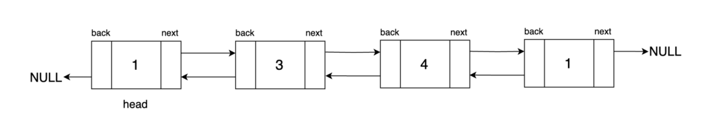
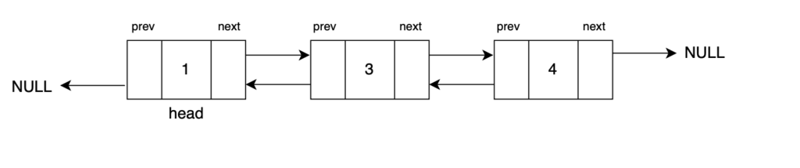
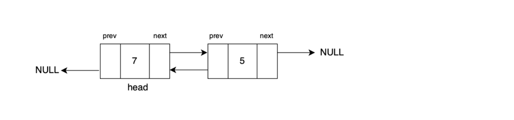
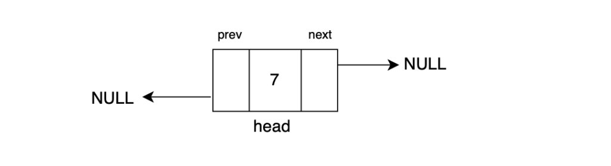
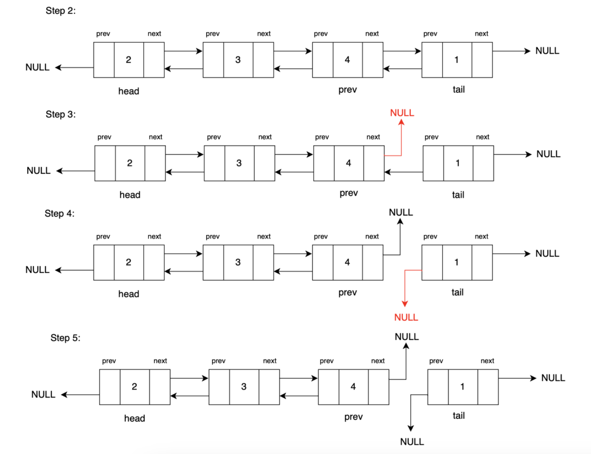

Problem Statement: Given a Doubly Linked List. Delete the last of a Doubly Linked List.
Examples
Example 1: DLL: 1 <-> 3 <-> 4 <-> 1

Result: DLL: 1 <-> 3 <-> 4

Explanation: After deleting the tail node we will get a doubly linked list. The node at the end of the doubly linked list will no longer be a part of it.
Input Format: DLL: 7 <-> 5

Result: DLL: 7

Explanation: 7 will be the only node left after we delete the tail node of the doubly linked list.
Disclaimer: Don’t jump directly to the solution, try it out
yourself first.
Solution:
Approach:
To delete the tail of a doubly linked list, we update the linkage between its last node and its second last node. Since a doubly linked list is bidirectional, we set the second last node's next pointer and the last node's back pointer to null. Then, we return the head as the result.
Two edge cases to consider are:
If the input doubly linked list is empty, we return null.
If there is only one node in the list, that node itself will be the tail and we return null after deleting that node.
Algorithm
Step 1: Traverse the doubly linked list to the last node and keeptrack of it using the tail pointer.
We start from the head of the doubly linked list and iterate through the list using a while loop until we reach the last node. The tail pointer is used to keep track of this last node.
Step 2: Obtain the second last node using the tail's back pointer, and name it the prev pointer.
Step 3: Set the 'next' pointer of the prev node to null. This step effectively disconnects the initial tail node from the list in the forward direction, making prev the new tail node.
Step 4: Set the 'back' pointer of the tail node to null. This ensures that the tail node no longer points back to the prev node, as it is now the last node in the list.
Step 5: Return the head of the doubly linked list as the result. Now that we have updated the doubly linked list, the list is now one node shorter than before.

Step 6: Delete tail (C++ Only)
Note that in C++, it's essential to explicitly delete the previous tail to freememory. In Java, memory management isautomatic, handled by the garbage collector, which cleans up unreferenced objects.
Code:
#include <iostream>
#include <bits/stdc++.h>
using namespace std;
// Define a Node class for doubly linked list
class Node {
public:
int data; // Data stored in the node
Node* next; // Pointer to the next node in the list (forward direction)
Node* back; // Pointer to the previous node in the list (backward direction)
// Constructor for a Node with both data, a reference to the next node, and a reference to the previous node
Node(int data1, Node* next1, Node* back1) {
data = data1;
next = next1;
back = back1;
}
// Constructor for a Node with data, and no references to the next and previous nodes (end of the list)
Node(int data1) {
data = data1;
next = nullptr;
back = nullptr;
}
};
// Function to convert an array to a doubly linked list
Node* convertArr2DLL(vector<int> arr) {
// Create the head node with the first element of the array
Node* head = new Node(arr[0]);
// Initialize 'prev' to the head node
Node* prev = head;
for (int i = 1; i < arr.size(); i++) {
// Create a new node with data from the array and set its 'back' pointer to the previous node
Node* temp = new Node(arr[i], nullptr, prev);
// Update the 'next' pointer of the previous node to point to the new node
prev->next = temp;
// Move 'prev' to the newly created node for the next iteration
prev = temp;
}
// Return the head of the doubly linked list
return head;
}
// Function to print the elements of the doubly linked list
void print(Node* head) {
while (head != nullptr) {
// Print the data in the current node
cout << head->data << " ";
// Move to the next node
head = head->next;
}
}
// Function to delete the head of the doubly linked list
// The functionality of this has been explained in our previous
// article, please refer to it.
Node* deleteHead(Node* head) {
if (head == nullptr || head->next == nullptr) {
// Return NULL if the list is empty or contains only one element
return nullptr;
}
// Store the current head as 'prev'
Node* prev = head;
// Move 'head' to the next node
head = head->next;
// Set 'back' pointer of the new head to nullptr
head->back = nullptr;
// Set 'next' pointer of 'prev' to nullptr
prev->next = nullptr;
// Return the new head
return head;
}
// Function to delete the tail of the doubly linked list
Node* deleteTail(Node* head) {
if (head == nullptr || head->next == nullptr) {
// If the list is empty or has only one node, return null
return nullptr;
}
Node* tail = head;
while (tail->next != nullptr) {
// Traverse to the last node (tail)
tail = tail->next;
}
Node* newTail = tail->back;
newTail->next = nullptr;
tail->back = nullptr;
// Free memory of the deleted node
delete tail;
return head;
}
int main() {
vector<int> arr = {12, 5, 8, 7};
Node* head = convertArr2DLL(arr);
cout << "Original Doubly Linked List: ";
print(head);
cout << "\n\nAfter deleting the tail node: ";
head = deleteTail(head);
print(head);
return 0;
}
Output:
12 5 8 7 After deleting tail node: 12 5 8
Time Complexity: O(1) Removing the head of a doubly linked list is a quick operation, taking constant time because it only involves updating references.
Space Complexity: O(1) Deleting the head also has minimal memory usage, using a few extra pointers without regard to the list's size.
public class DLinkedList {
public static class Node {
public int data; // Data stored in the node
public Node next; // Reference to the next node in the list (forward direction)
public Node back; // Reference to the previous node in the list (backward direction)
// Constructor for a Node with both data, a reference to the next node, and a reference to the previous node
public Node(int data1, Node next1, Node back1) {
data = data1;
next = next1;
back = back1;
}
// Constructor for a Node with data, and no references to the next and previous nodes (end of the list)
public Node(int data1) {
data = data1;
next = null;
back = null;
}
}
// Function to convert an array to a doubly linked list
private static Node convertArr2DLL(int[] arr) {
Node head = new Node(arr[0]); // Create the head node with the first element of the array
Node prev = head; // Initialize 'prev' to the head node
for (int i = 1; i < arr.length; i++) {
// Create a new node with data from the array and set its 'back' pointer to the previous node
Node temp = new Node(arr[i], null, prev);
prev.next = temp; // Update the 'next' pointer of the previous node to point to the new node
prev = temp; // Move 'prev' to the newly created node for the next iteration
}
return head; // Return the head of the doubly linked list
}
// Function to delete the tail of the doubly linked list
private static Node deleteTail(Node head) {
if (head == null || head.next == null) {
return null; // Return null if the list is empty or contains only one element
}
Node tail = head;
while (tail.next != null) {
tail = tail.next;
}
Node newtail = tail.back;
newtail.next = null;
tail.back = null;
return head;
}
// Function to delete the head of the doubly linked list
private static Node deleteHead(Node head) {
if (head == null || head.next == null) {
return null; // Return null if the list is empty or contains only one element
}
Node prev = head;
head = head.next;
head.back = null; // Set 'back' pointer of the new head to null
prev.next = null; // Set 'next' pointer of 'prev' to null
return head;
}
// Function to print the elements of the doubly linked list
private static void print(Node head) {
while (head != null) {
System.out.print(head.data + " "); // Print the data in the current node
head = head.next; // Move to the next node
}
System.out.println();
}
public static void main(String[] args) {
int[] arr = {12, 5, 6, 8};
Node head = convertArr2DLL(arr); // Convert the array to a doubly linked list
print(head); // Print the doubly linked list
System.out.println("Doubly Linked List after deleting tail node: ");
head = deleteTail(head);
print(head);
}
}
Output:
12 5 8 7 After deleting tail node: 12 5 8
Time Complexity: O(1) Removing the head of a doubly linked list is a quick operation, taking constant time because it only involves updating references.
Space Complexity: O(1) Deleting the head also has minimal memory usage, using a few extra pointers without regard to the list's size.
class Node:
def __init__(self, data, next_node=None, back_node=None):
self.data = data
self.next = next_node
self.back = back_node
def convert_arr_to_dll(arr):
# Create the head node with the first element of the array
head = Node(arr[0])
# Initialize 'prev' to the head node
prev = head
for i in range(1, len(arr)):
# Create a new node with data from the array and set its 'back' pointer to the previous node
temp = Node(arr[i], None, prev)
# Update the 'next' pointer of the previous node to point to the new node
prev.next = temp
# Move 'prev' to the newly created node for the next iteration
prev = temp
# Return the head of the doubly linked list
return head
def print_dll(head):
while head is not None:
# Print the data in the current node
print(head.data, end=" ")
# Move to the next node
head = head.next
def delete_tail(head):
if head is None or head.next is None:
return None # If the list is empty or has only one node, return None
tail = head
while tail.next is not None:
# Traverse to the last node (tail)
tail = tail.next
new_tail = tail.back
new_tail.next = None
tail.back = None
# Free memory of the deleted node
del tail
return head
if __name__ == "__main__":
arr = [12, 5, 8, 7]
head = convert_arr_to_dll(arr)
print("Original Doubly Linked List:", end=" ")
print_dll(head)
print("\n\nAfter deleting the tail node:", end=" ")
head = delete_tail(head)
print_dll(head)
Output:
12 5 8 7 After deleting tail node: 12 5 8
Time Complexity: O(1) Removing the head of a doubly linked list is a quick operation, taking constant time because it only involves updating references.
Space Complexity: O(1) Deleting the head also has minimal memory usage, using a few extra pointers without regard to the list's size.
[tabby title="JavaScript Code"]
// Define a Node class for doubly linked list
class Node {
constructor(data, nextNode = null, backNode = null) {
this.data = data;
this.next = nextNode;
this.back = backNode;
}
}
// Function to convert an array to a doubly linked list
function convertArrToDLL(arr) {
// Create the head node with the first element of the array
const head = new Node(arr[0]);
// Initialize 'prev' to the head node
let prev = head;
for (let i = 1; i < arr.length; i++) {
// Create a new node with data from the array and set its 'back' pointer to the previous node
const temp = new Node(arr[i], null, prev);
// Update the 'next' pointer of the previous node to point to the new node
prev.next = temp;
// Move 'prev' to the newly created node for the next iteration
prev = temp;
}
// Return the head of the doubly linked list
return head;
}
// Function to print the elements of the doubly linked list
function printDLL(head) {
while (head !== null) {
// Print the data in the current node
console.log(head.data + " ");
// Move to the next node
head = head.next;
}
}
// Function to delete the tail node of the doubly linked list
function deleteTail(head) {
if (head === null || head.next === null) {
return null; // If list is empty or has only one node, return null
}
let tail = head;
while (tail.next !== null) {
// Traverse to the last node (tail)
tail = tail.next;
}
const newTail = tail.back;
newTail.next = null;
tail.back = null;
// Free memory of the deleted node
delete tail;
return head;
}
const arr = [12, 5, 8, 7];
let head = convertArrToDLL(arr);
console.log("Original Doubly Linked List:", end=" ");
printDLL(head);
console.log("\n\nAfter deleting the tail node:", end=" ");
head = deleteTail(head);
printDLL(head);
Output:
12 5 8 7 After deleting tail node: 12 5 8
Time Complexity: O(1) Removing the head of a doubly linked list is a quick operation, taking constant time because it only involves updating references.
Space Complexity: O(1) Deleting the head also has minimal memory usage, using a few extra pointers without regard to the list's size.
In case you are learning DSA, you should definitely check out our free A2Z DSA Course with videos and blogs.
Special thanks to Gauri Tomar for contributing to this article on takeUforward. If you also wish to share your knowledge with the takeUforward fam, please check out this article